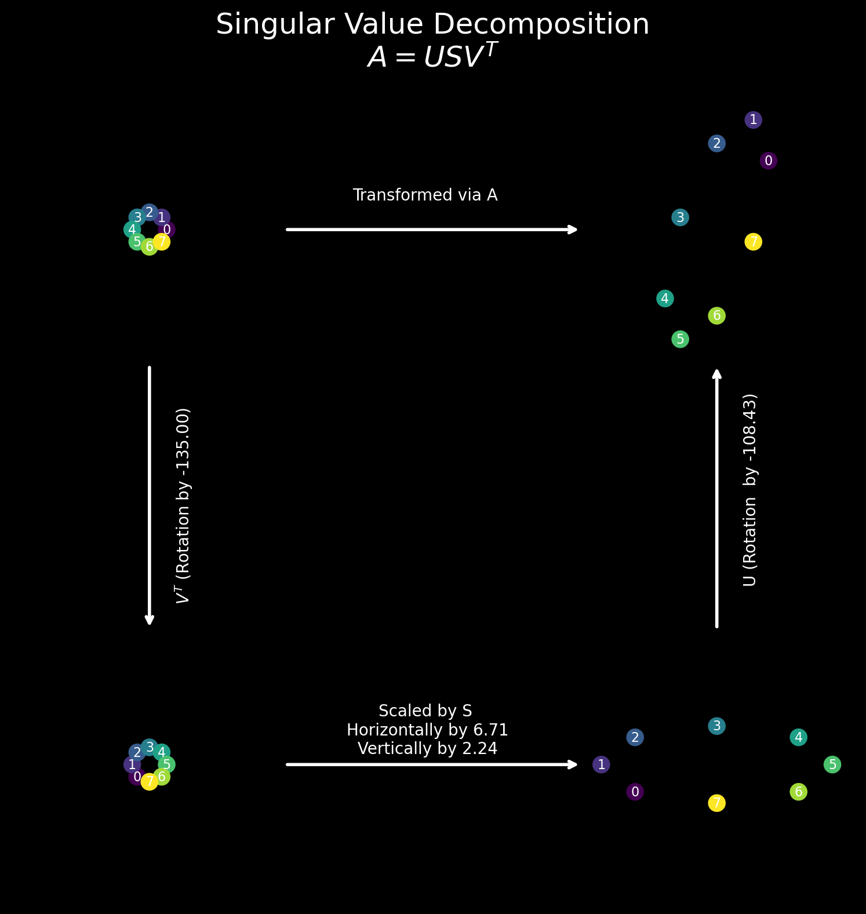

from jax import vmap, jit, grad, vmap
import jax.numpy as jnp
# Enable 64-bit mode
from jax.config import config
config.update("jax_enable_x64", True)
import matplotlib.pyplot as plt
from matplotlib.patches import ConnectionPatch
%matplotlib inline
plt.style.use('dark_background')
# Retina display
%config InlineBackend.figure_format = 'retina'
# Create an array of 8 points around a unit circle, each at 45 degrees distance
x = jnp.array([[1, 0], [0.707, 0.707], [0, 1], [-0.707, 0.707], [-1, 0], [-0.707, -0.707], [0, -1], [0.707, -0.707]])
# Define the matrix A
A = jnp.array([[3, 0], [4, 5]])
# Compute the SVD of A
U, S, VT = jnp.linalg.svd(A, full_matrices=False)
V = VT.TWARNING:absl:No GPU/TPU found, falling back to CPU. (Set TF_CPP_MIN_LOG_LEVEL=0 and rerun for more info.)def matvec(A, vec):
"""
vec: (2,)
A: (2, 2)
"""
return A@vecmatvec(A, x[0]), matvec(A, x[1])(DeviceArray([3., 4.], dtype=float64),
DeviceArray([2.121, 6.363], dtype=float64))# vmap the matvec function
vmap_matvec = vmap(matvec, in_axes=(None, 0))
Ax = vmap_matvec(A, x)
AxDeviceArray([[ 3. , 4. ],
[ 2.121, 6.363],
[ 0. , 5. ],
[-2.121, 0.707],
[-3. , -4. ],
[-2.121, -6.363],
[ 0. , -5. ],
[ 2.121, -0.707]], dtype=float64)Vx = vmap_matvec(VT, x)
VxDeviceArray([[-7.07106781e-01, -7.07106781e-01],
[-9.99848989e-01, 6.74518966e-18],
[-7.07106781e-01, 7.07106781e-01],
[-6.74518966e-18, 9.99848989e-01],
[ 7.07106781e-01, 7.07106781e-01],
[ 9.99848989e-01, -6.74518966e-18],
[ 7.07106781e-01, -7.07106781e-01],
[ 6.74518966e-18, -9.99848989e-01]], dtype=float64)SV = Vx*S
SVDeviceArray([[-4.74341649e+00, -1.58113883e+00],
[-6.70719092e+00, 1.50827026e-17],
[-4.74341649e+00, 1.58113883e+00],
[-4.52481078e-17, 2.23573031e+00],
[ 4.74341649e+00, 1.58113883e+00],
[ 6.70719092e+00, -1.50827026e-17],
[ 4.74341649e+00, -1.58113883e+00],
[ 4.52481078e-17, -2.23573031e+00]], dtype=float64)vmap_matvec(U, SV)DeviceArray([[ 3.00000000e+00, 4.00000000e+00],
[ 2.12100000e+00, 6.36300000e+00],
[ 9.53863757e-16, 5.00000000e+00],
[-2.12100000e+00, 7.07000000e-01],
[-3.00000000e+00, -4.00000000e+00],
[-2.12100000e+00, -6.36300000e+00],
[-9.53863757e-16, -5.00000000e+00],
[ 2.12100000e+00, -7.07000000e-01]], dtype=float64)jnp.allclose(vmap_matvec(U, SV), vmap_matvec(A, x))DeviceArray(True, dtype=bool)vmap_matvec(U, SV)DeviceArray([[ 3.00000000e+00, 4.00000000e+00],
[ 2.12100000e+00, 6.36300000e+00],
[ 9.53863757e-16, 5.00000000e+00],
[-2.12100000e+00, 7.07000000e-01],
[-3.00000000e+00, -4.00000000e+00],
[-2.12100000e+00, -6.36300000e+00],
[-9.53863757e-16, -5.00000000e+00],
[ 2.12100000e+00, -7.07000000e-01]], dtype=float64)vmap_matvec(A, x)DeviceArray([[ 3. , 4. ],
[ 2.121, 6.363],
[ 0. , 5. ],
[-2.121, 0.707],
[-3. , -4. ],
[-2.121, -6.363],
[ 0. , -5. ],
[ 2.121, -0.707]], dtype=float64)# Plot subplots of the above transformations in one figure with arrows showing the direction of transformation.
# We have 2 rows and 2 columns
fs = 8
fig, ax = plt.subplots(2, 2, figsize=(8, 8))
# Modify the plot function to accept an axis object
def plot(x, ax):
ax.set_facecolor((0.0, 0.0, 0.0, 1))
ax.scatter(x[:, 0], x[:, 1], c=jnp.arange(x.shape[0]), cmap='viridis', s=100)
# Add the index of the point as a label
for i in range(x.shape[0]):
ax.text(x[i, 0], x[i, 1], str(i), color='white', fontsize=8, ha='center', va='center')
ax.set_xlim(-fs, fs)
ax.set_ylim(-fs, fs)
ax.set_aspect('equal')
ax.set_xticks([])
ax.set_yticks([])
ax.set_xticklabels([])
ax.set_yticklabels([])
ax.set_xlabel('')
ax.set_ylabel('')
ax.zorder = -1
# Disable the border axis
ax.spines['top'].set_visible(False)
ax.spines['right'].set_visible(False)
ax.spines['bottom'].set_visible(False)
ax.spines['left'].set_visible(False)
# Plot the original points
plot(x, ax[0, 0])
# Plot transformed points by A using JAX.vmap
xa = vmap_matvec(A, x)
plot(xa, ax[0, 1])
# Plot rotated points by VT
xv = vmap_matvec(VT, x)
# Find the angle of rotation by V
angle_v = jnp.arctan2(VT[1, 0], VT[0, 0])
print('Angle of rotation by V: {:.2f} degrees'.format(angle_v*180/jnp.pi))
plot(xv, ax[1, 0])
angle_u = jnp.arctan2(U[1, 0], U[0, 0])
# plot the above points scaled by S
xs = xv*S
plot(xs, ax[1, 1])
# Add an arrow between [0, 0] and [0, 1] subplots using the matplotlib.patch.ConnectionPatch
# add some text "transformed via A" to the arrow
con = ConnectionPatch(xyA=(fs, 0), xyB=(-fs, 0), coordsA="data", coordsB="data", axesA=ax[0, 0], axesB=ax[0, 1],
color="w", zorder=1, arrowstyle='->', lw=2)
ax[0, 0].add_artist(con)
ax[0, 0].text(2*fs, 2, 'Transformed via A', color='w', fontsize=10, ha='center', va='center', zorder=1)
con1 = ConnectionPatch(xyA=(0, -fs), xyB=(0, fs), coordsA="data", coordsB="data", axesA=ax[0, 0], axesB=ax[1, 0],
color="w", zorder=1, arrowstyle='->', lw=2)
ax[0, 0].add_artist(con1)
ax[0, 0].text(2, -2*fs, r'$V^T$' +f' (Rotation by {angle_v*180/jnp.pi:0.2f})', color='w', fontsize=10, ha='center', va='center', zorder=1, rotation=90)
con2 = ConnectionPatch(xyA=(fs, 0), xyB=(-fs, 0), coordsA="data", coordsB="data", axesA=ax[1, 0], axesB=ax[1, 1],
color="w", zorder=1, arrowstyle='->', lw=2)
ax[1, 0].add_artist(con2)
ax[1, 0].text(2*fs, 2, f'Scaled by S\n Horizontally by {S[0]:0.2f}\n Vertically by {S[1]:0.2f}', color='w', fontsize=10, ha='center', va='center', zorder=1)
con3 = ConnectionPatch(xyA=(0, fs), xyB=(0, -fs), coordsA="data", coordsB="data", axesA=ax[1, 1], axesB=ax[0, 1],
color="w", zorder=1, arrowstyle='->', lw=2)
ax[1, 1].add_artist(con3)
ax[1, 1].text(2, 2*fs, f'U (Rotation by {angle_u*180/jnp.pi:0.2f})', color='w', fontsize=10, ha='center', va='center', zorder=1, rotation=90)
# Add a lot of spacing between the subplots
fig.subplots_adjust(hspace=0.5, wspace=0.5)
fig.suptitle('Singular Value Decomposition\n' +r'$A = USV^T$', fontsize=18, color='w')
fig.tight_layout()
fig.savefig('svd.png', dpi=600, bbox_inches='tight')Angle of rotation by V: -135.00 degrees